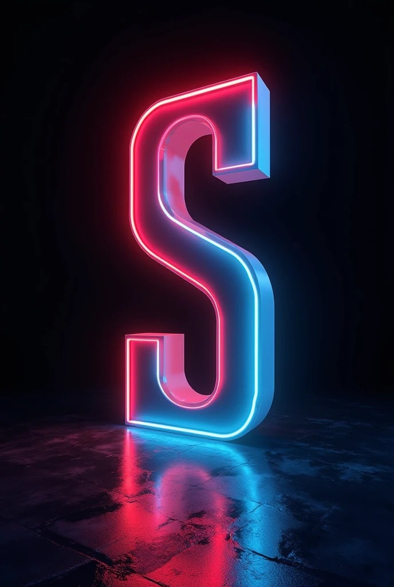
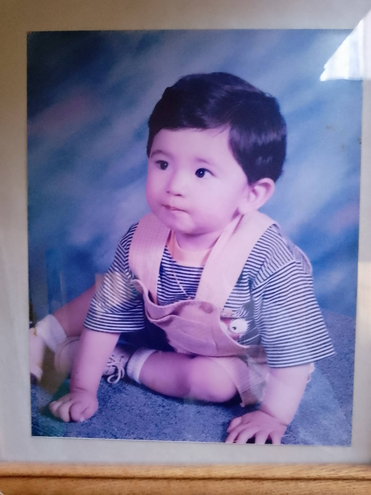
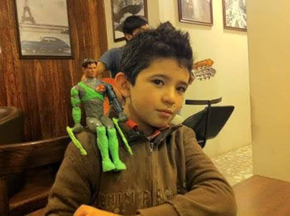
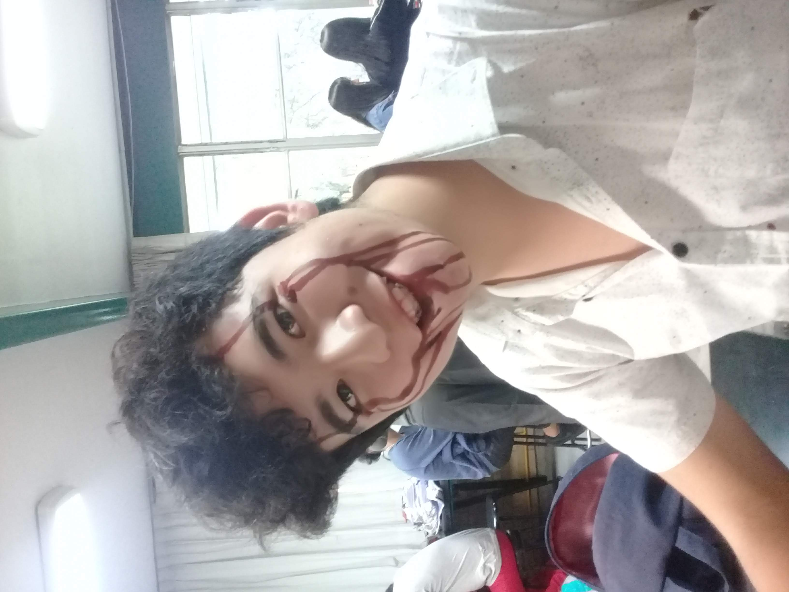
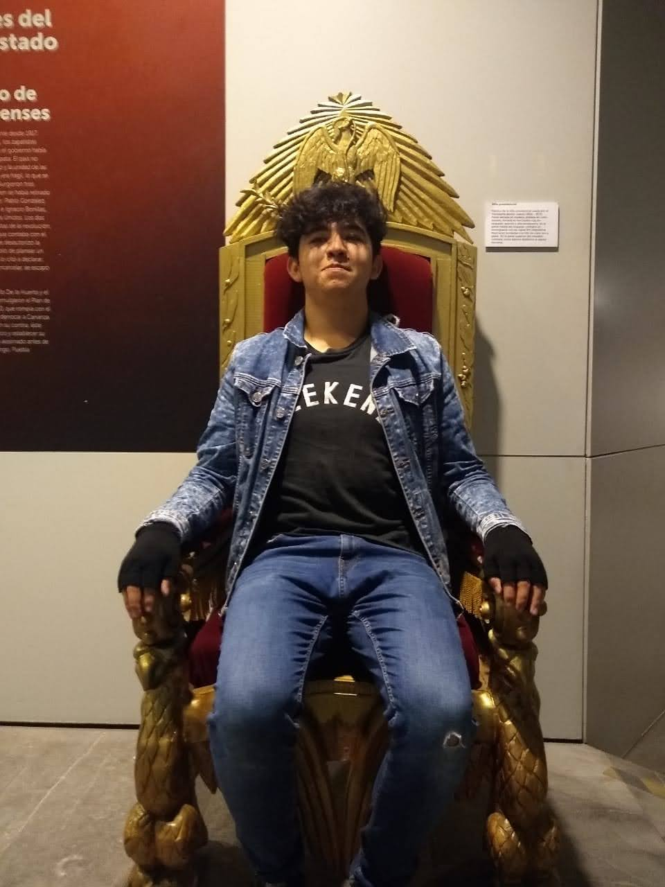
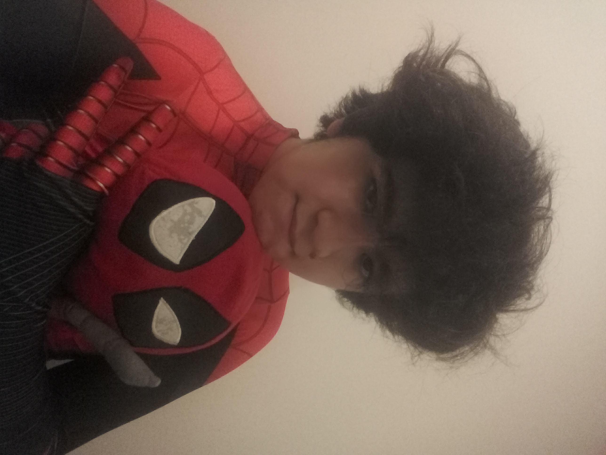
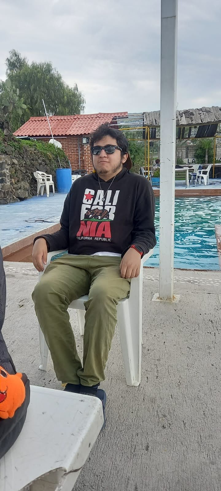
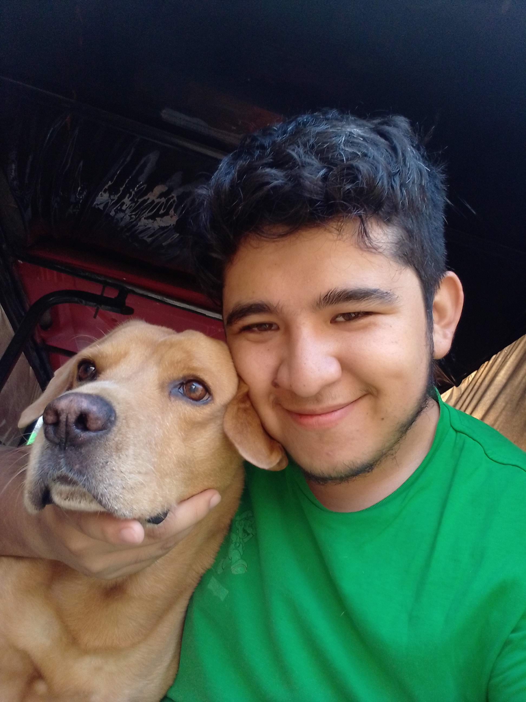
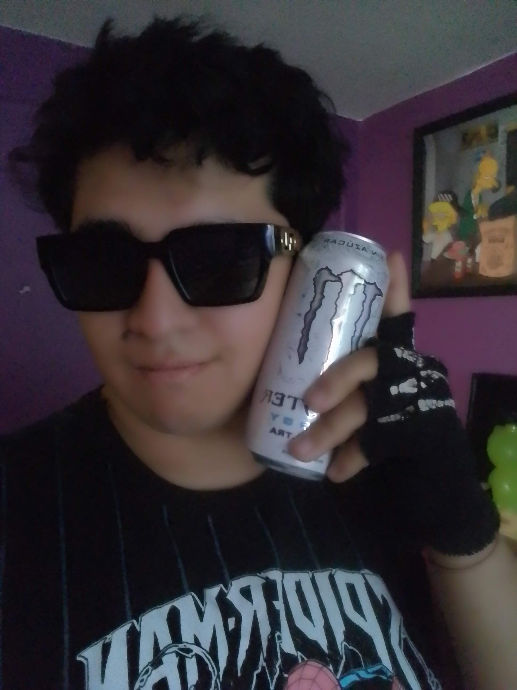

Efren Uriel
Shadow • Parker
¡El 30 de Junio cumplo 23 años! 🎉
"Soy ese 👊✨"
Sobre Mí (Expediente Auditado)
¡Hola! Como futuro Ingeniero en Sistemas Computacionales, me apasiona la tecnología, pero sobre todo, compartir buenas vibras. Le pregunté a mis amigos cómo me definirían y, tras un riguroso control de calidad (y varias advertencias sobre mi consumo de Monster), aquí están mis variables principales:
Modificadores de Estado Seleccionados:
Mi Línea del Tiempo
Desliza horizontalmente para ver mi evolución real ➔



.jpg)






Nucleo Inspiración
Mis grandes pilares para buscar siempre una mejor versión de mí mismo:
⚡ Selecciona un héroe para desplegar su expediente:
Entretenimiento & Medios
- Saga Gamer: Mortal Kombat (Mortal Kombat Komplete Edition 2011)
- Película Favorita: Ready Player One 🕹️
- Serie Favorita: FRIENDS ☕
- Combustible Diario: Hamburguesas 🍔 + Dr. Pepper Cream Soda 🥤 + Monster Energy (Zero Ultra) ⚡
Soundtrack Personal
⚡ Presiona un artista para escuchar su track:
¿Activamos el protocolo de festejo? 🥂
Si quieres dejarme un saludo de cumpleaños directo en mi centro de mensajería, dale clic abajo e iniciemos la partida del día.